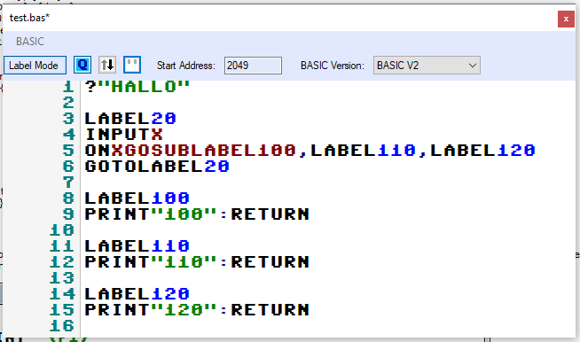

To allow for the C64s special characters most of the keyboard layout is remapped:
The Tab key is used as replacement for the Commodore key
Color and mode codes in string literals are replaced by text representations on entry. Currently supported are:
- {Black}, {blk}
- {White}, {wht}
- {Red}, {red}
- {Cyn}, {cyn}
- {Purple}, {pur}
- {Green}, {grn}
- {Blue}, {blu}
- {Yellow}, {yel}
- {Orange}, {orng}
- {Brown}, {brn}
- {Light Red}, {lred}
- {Dark Grey}, {gry1}
- {Grey}, {gry2}
- {Light Green}, {lgrn}
- {Light Blue}, {lblu}
- {Light Grey}, {gry3}
- {Reverse On}, {rvon}
- {Reverse Off}, {rvof}
- {Cursor Down}, {down}
- {Cursor Up}, {up}
- {Cursor Left}, {left}
- {Cursor Right}, {rght}
- {Del}
- {Insert}
- {Clr}, {clr}
- {Home}, {home}
- {F1}
- {F2}
- {F3}
- {F4}
- {F5}
- {F6}
- {F7}
- {F8}
- {CBM-A} to {CBM-Z}
- {SHIFT-A} to {SHIFT-Z}
Clicking on the toggle button "Label Mode" toggles the Basic editor between common line numbered and label mode. In label mode, all line numbers are removed, any referencing tokens are changed to use labels. When toggling back the basic file is renumbered completely new.
